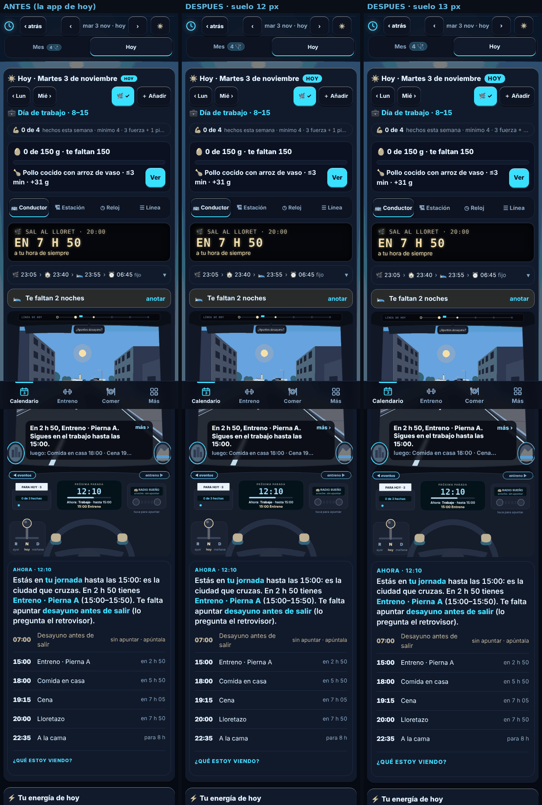
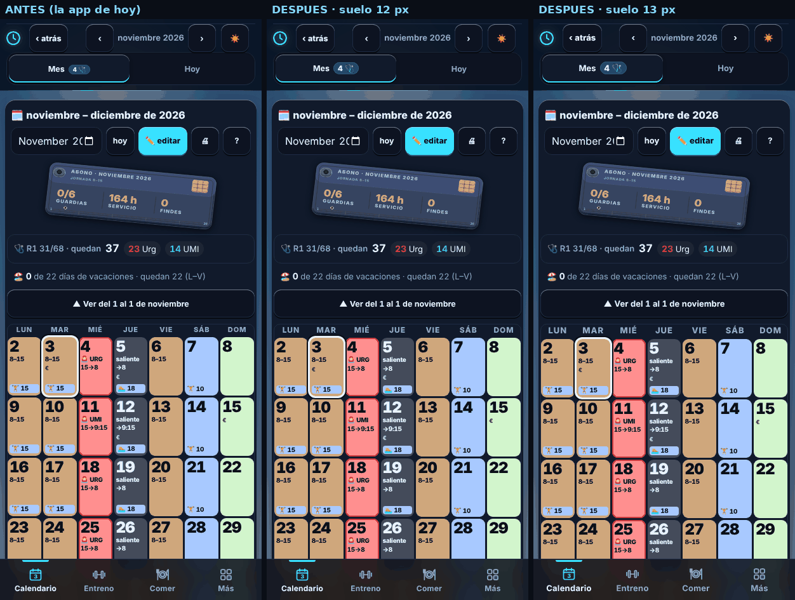
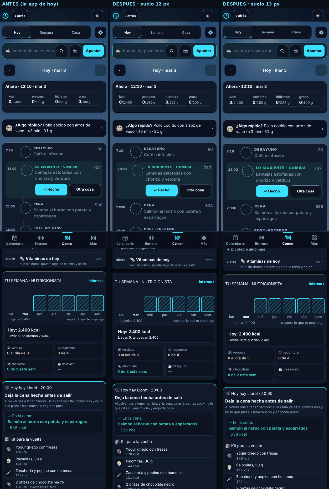
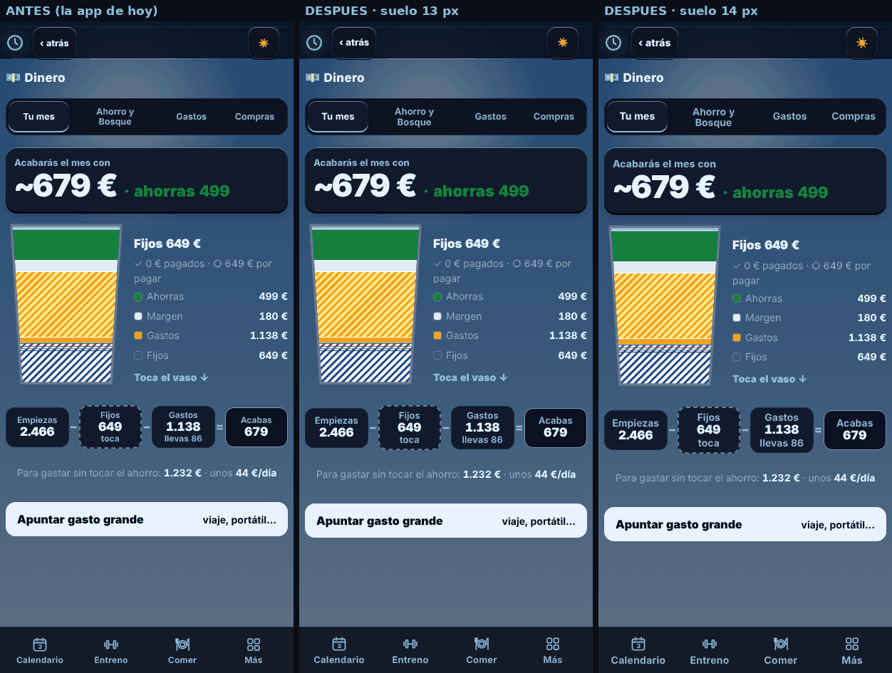
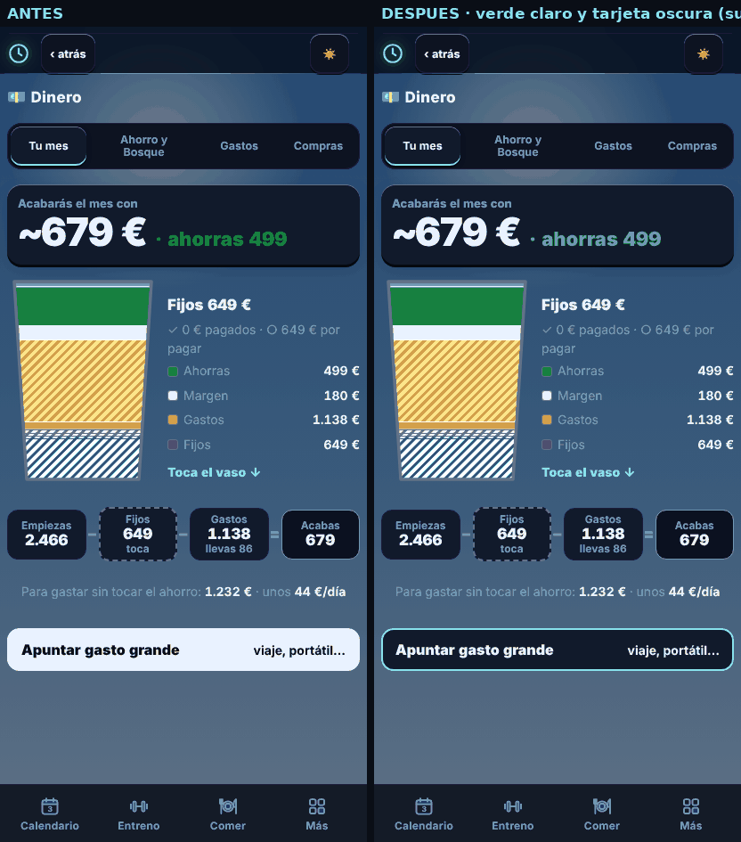

Pantallas a 412×915 con la piel real de la app (tema Noche HUD por defecto, tarjeta de 16 px de radio, botones de 48 px). Todos los datos son inventados. La cara se queda (tinte granate en guardia, cartel LED, tono amable); se copia el orden y el tamaño: letra mínima 13 px, un solo color de acción (el cian), sin emojis en botones de acción, cifras de ancho fijo.
Hoy anotar la noche son 2 toques y una hoja de tramos. Aquí: una fila bajo el cartel La Noche, con las horas de «He vuelto» y «En pie» que la app ya guarda; «Vale» = 1 toque. Y el cartel gana una línea por día. Se quita la fila «Te faltan N noches».
Tres avisos: la siesta, el último café y la salida. Se quitan con un toque.
1. Las tres caras de «cómo amaneces»
2. La línea del cartel en víspera y guardia
3. La fila «Te faltan N noches»
Capturas reales de la app a 412×915 (datos inventados: 7 guardias, 12 noches, 5 fijos, 4 gastos, rutina de 4 días, 4 hábitos; martes 3 nov, 12:10). «Después» = prototipo del script que se construirá: todo tamaño computado por debajo del suelo se sube al suelo, salvo las casillas del Mes, los dibujos de fig/ y la línea del día. Mide solo texto visible.
| Vista (412×915) | Elementos bajo el suelo: suelo 12 (Dinero 13) | suelo 13 (Dinero 14) | Alto total, antes → después (en pantallas de 915 px) |
|---|---|---|---|
| Hoy | 8 → 0 | 41 → 0 | 3111 px (3,40) → 3113 px (3,40) / 3117 px (3,41) |
| Mes | 20 → 0 (+63 exentos) | 37 → 0 (+63 exentos) | 1120 px (1,22) → 1121 px (1,23) / 1123 px (1,23) |
| Comer | 40 → 0 | 69 → 0 | 2730 px (2,98) → 2741 px (3,00) / 2760 px (3,02) |
| Dinero | 16 → 0 | 17 → 0 | 915 px (1,00) → 915 px (1,00) / 915 px (1,00) |
«Exentos» = casillas del Mes (.dbox), dibujos y la línea del día (.carrilbox): no se tocan. Los desbordes de texto por la derecha no cambian en ninguna vista (27, 10, 10 y 10 elementos antes y después): no hay recortes nuevos. Sin scroll horizontal (ancho del documento 412 px en las 8 pruebas).
Alto de Hoy en otros días (misma siembra, antes de tocar nada): víspera de guardia 2940 px (3,21 pantallas); día de guardia 2797 px (3,06 pantallas); saliente 2855 px (3,12 pantallas). Medido como el documento entero (cabecera y barra incluidas). El acta decía 3,3 pantallas: un día laborable sale 3,40.
Lectura: subir el suelo cuesta casi nada de altura (Hoy +2 / +6 px, Comer +11 / +30 px, Mes +1 / +3 px): casi todo lo pequeño vive en cajas de 44 px o más. Lo que pasa a 13 px son 41 elementos de Hoy, 37 del Mes, 69 de Comer y 16 de Dinero.

Hoy: antes · suelo 12 · suelo 13 (primeras 2 pantallas).

Mes: las casillas conservan su letra (excepción); suben los rótulos de la cabecera y de la tira de la semana.

Comer (primeras 2 pantallas).

Dinero: suelo 13 en el centro y 14 a la derecha.
| Pieza | Antes | Después |
|---|---|---|
| Verde de «ahorras 499» | #15803d sobre #10192a: 3,5 : 1 (no llega a 4,5) | #4ade80 sobre #11192b: 10 : 1 |
| Tarjeta «Apuntar gasto grande» | Fondo casi blanco (luminancia 0,88) sobre la pantalla oscura: deslumbra | Fondo de tarjeta oscuro (luminancia 0,01), borde cian, texto 15,4 : 1. Un solo botón claro por pantalla: el de acción |
| Tema claro | Sin cambios | Sin cambios (el verde #15803d ya pasa sobre blanco) |

Inventario real de lo que Hoy puede sacar (grep en app.js): protegen (guardia, salientes, conducir) y mantenimiento. Hoy se apilan sin orden: en un lunes de prueba suman unos 465 px (plantilla 54, «Te faltan noches» 44, informe de la semana 73, tarjeta del asistente 294) antes de llegar a lo que toca.
| Prioridad | Aviso (dónde vive) | Cuándo sale | Regla |
|---|---|---|---|
| P0 · franja | Órdenes de guardia: siesta, último café, salida (snOrdenesHTML, L7083) | Víspera y día de guardia | Siempre visible; «Avisarme» |
| P0 · franja | Saliente: siesta al llegar / «20 min de siesta antes de conducir» (snOrdenes, L7065) | Al salir de guardia | Siempre visible |
| P0 · franja | No conducir: «Energía N: mejor no conducir» (L7073) | Desde 2 h antes de volver al coche | Siempre visible, en granate |
| P0 · franja | Evento dentro de la guardia o la jornada (hoyChoqueHTML, L6487) | Mientras exista el choque | Visible hasta resolver |
| P0 · franja | «Sin pantallas desde las …» (pantHTML, L7869) | 45 min antes de la cama hasta +30 | Visible en su franja |
| P0 · franja | Aviso del 4:20 «Mañana guardia» (CN_R, L19735) | Víspera de guardia | Se une a la franja de guardia |
| P1 · cola, 1 a la vez | Modo plantilla (modoAvisoHTML, L5461) | Mientras no se arregle | Primero: se arregla una vez |
| P1 | Copia fuera del móvil (paraHoyItems, L4871) | Cada 7 días | Después |
| P1 | Cierra el mes con Fintonic (DIN_R) | Fin de mes | Después |
| P1 | Hábitos: «versión corta», «dos días sin…», «ayer no hubo…», obstáculos, «¿ya te sale solo?», «hueco para uno nuevo» (HAB_R, L19669) | Según el hábito | «Versión corta» primero; el resto, de uno en uno |
| P1 | Conflicto de entreno: «solo caben X de Y» (L4862) | Si la semana no cabe | Después |
| P1 | Sugerencia de cama «Vale, 23:15» (nocheSugHTML) | Tras 3 noches tarde | Se queda como aviso 1 de la cola |
| P1 | «Tu semana pasada» (informeTocaHTML, L8134) | Lunes y martes | Después |
| P1 | Dinero: «Gastas más de…», «Este mes cobras…» (DIN_R); 4:20: T-break, sesiones para dormir (CN_R) | Según datos | Al final de la cola |
| Fuera | «Te faltan N noches» (suenoFaltaHTML, L7530) | — | Se quita (lo cubre la fila «Anoche») |
| No es aviso | Energía y coach (coachHTML), proteína (protHoyHTML), pagos del día, compra, notas (paraHoyItems) | — | Siguen donde están (Ahora, Comer, Para hoy) |
1. Suelo de letra
2. Avisos de mantenimiento
3. Contraste en oscuro
Un gasto de 12 €, una serie suelta y empezar el entreno, con menos pasos. Contados sobre la app real (con datos inventados).
Para gastar sin tocar el ahorro: 1.232 € · unos 44 €/día
Para gastar sin tocar el ahorro: 1.232 € · unos 44 €/día
| Tarea | Hoy (toques) | Con la maqueta | Qué cambia |
|---|---|---|---|
| Apuntar un gasto de 12 € | 7 y teclear: Más › Dinero › Gastos › «Apuntar a mano» › lista de categoría (2) › Guardar | 4 y teclear: Más › Dinero › «＋ Gasto» › Guardar. Ya en Dinero: 2 | Botón dentro de la tarjeta Tu mes; la hoja trae hoy y la última categoría |
| Serie suelta en entreno libre | 5-6 y teclear: «apuntar a mano» (hay que bajar) › ejercicio (2) › kg (sale en 0) › reps › «apuntar serie» | 3, o 4 si cambia el peso: «＋ serie» › ejercicio › Guardar (±2,5 opcional) | 5 últimos ejercicios con kg y reps de la última vez |
| Empezar el entreno de hoy (con rutina) | 2 toques y un desplazamiento: el botón está a 1.170 px, más de una pantalla abajo y tapado por la barra | 2 toques, sin desplazar: Entreno › «Empezar» | El dibujo grande pasa a una cinta L–D de 56 px y «Empezar» sube |
| Tras guardia | «Vienes de guardia · 25 min» está más abajo | Primera cosa de Entreno, por encima de «Empezar» | No se empuja torso/pierna |
Rótulo nuevo (fila F1): «Semana 1 de 5 · 0 entrenos», en lugar de «0 hechos · bloque · sem 1/5 ⚙». «▶ Seguir» sale en lugar de «Empezar» si ya hay sesión (marco C2·c1, abajo). «Copiar mi último entreno» y «guardar como rutina» quedan para la tanda 7: no están en esta maqueta.
1. Dónde va el «+» del gasto
2. El dibujo de Entreno
3. Paso del peso en «＋ serie»
Una tarjeta «Ahora» arriba que lleva siempre la salida de guardia, la energía y el aviso de conducir. Reordenar, no esconder: el dibujo del conductor, «Para hoy», la comida, el coach y «Lo que viene» siguen en Hoy, más abajo. La cadena es guardia › comida › ocio › sueño, la cuenta atrás es el cartel LED y «Vale, 23:15» es el primer aviso de la cola. Tira de hábitos: solo los que tocan hoy, máximo 3, oculta en guardia y saliente.
Trabajo hasta las 15:00. Luego entreno · Torso A (15:00–15:50).
Sin siesta: con tu noche basta, comida con proteína y entreno 15:00.
En la guardia URG hasta mañana a las 08:00.
Sales de guardia. 20 min de siesta antes de conducir, y a casa.
Las alturas de la maqueta se miden al generar las capturas (ver abajo, «Medidas de C3»).
| Hoy actual (laborable 12:10, medido en la app real) | Maqueta | |
|---|---|---|
| Día de trabajo | 3111 px (3,40 pantallas) | 1956 px (2,14 pantallas) |
| Día de guardia | 2797 px (3,06) | 1637 px (1,79 pantallas) |
| Saliente | 2855 px (3,12) | 1573 px (1,72 pantallas) |
| Lo esencial sin desplazar | Cartel y botones de la mañana en la 1.ª pantalla; la energía a ~1.250 px, «Para hoy» a ~1.700 px; guardia, comida, ocio y sueño repartidos | Ahora (frase, cuenta atrás, cadena, energía, conducir), 1 aviso y la tira de hábitos, todo en la 1.ª pantalla |
Maqueta medida como el documento entero: barra, Mes/Hoy y el hueco de la barra inferior incluidos. Sin esconder nada: sigue estando todo, en otro orden.
1. Qué lleva «Ahora»
2. Tira de hábitos
3. El dibujo del conductor